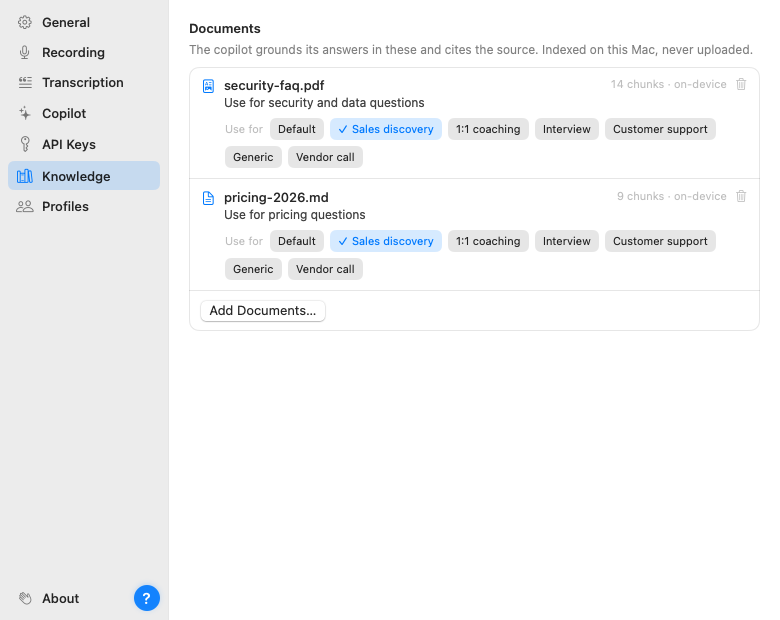

When the other side asks "what does the annual plan cost?", a generic AI can only improvise. The knowledge base is how you stop that: drop in your own documents (pricing sheets, FAQs, security one-pagers) in Settings → Knowledge, and the Copilot answers from them, citing which document it used on the card.

Documents are chunked and indexed on your Mac. During a call, Parrot picks the few passages that match what's being said right now and hands only those to the model along with the transcript. Cloud users take note: that means snippets of a matched document can be sent to your chosen provider during a call. If a document shouldn't ever leave the machine, use a local model or leave that document out.
Documents can be in most major languages, including Turkish, Dutch, Polish, Russian, Arabic, Hindi, Chinese, Japanese and Korean, as well as English and the main Western European ones. Questions in English can find answers in a document written in another Latin-alphabet language, such as Turkish or Spanish.
For a few alphabets (Arabic and Indian scripts, and Cyrillic on some Macs) macOS downloads a language model from Apple the first time you add such a document. The document works right away, but until the download finishes it only matches exact words. Your documents are never uploaded.
Each document can be limited to specific call profiles. Your pricing sheet belongs in sales calls; it has no business showing up in a 1:1. By default new documents are available everywhere.